Maestro Pro
Sheet music that plays along.
Notes light up as they sound, the page turns itself, and you play along with a backing track, a song from Apple Music, the built-in instrument or just a metronome. For iPad or Mac.
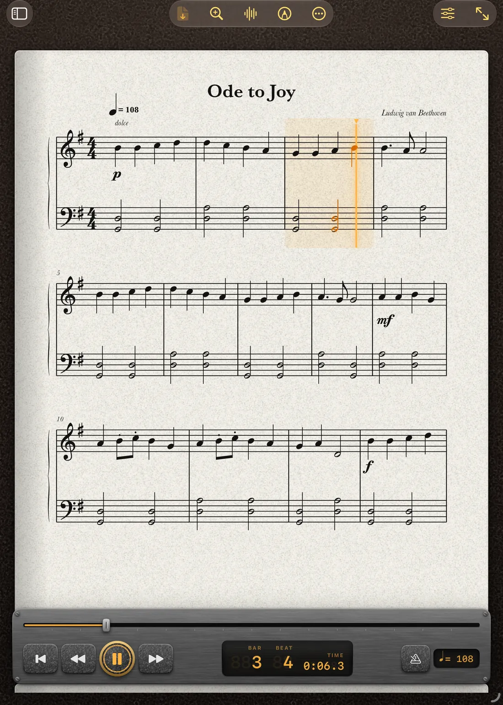
The page keeps up with you.
Press play and the music follows itself. The notes glow as they sound, a soft wash marks the bar, and the page scrolls or curls over like a real book exactly when you need it. Tap any note to start from there.
Slow a hard passage right down without changing the pitch. Transpose for your clarinet, trumpet or saxophone, and the score is typeset again in the new key rather than just labelled. Count yourself in, loop a bar, switch on a metronome.
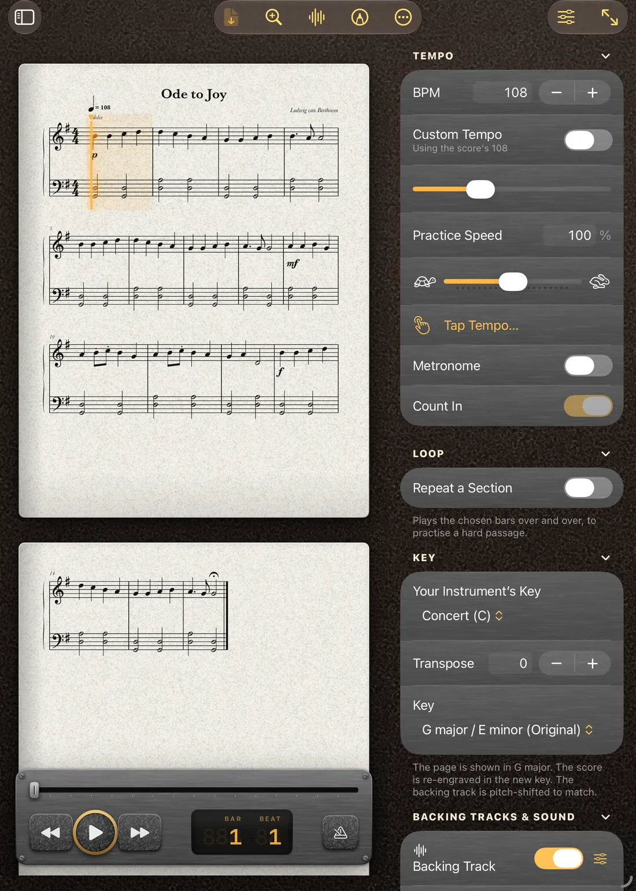
Everything a player needs on the stand.
- Your libraryImport PDF, MusicXML, MIDI and karaoke files, or search the web for free scores. Set-lists for a rehearsal or a gig. Scanning paper music with the camera is coming in a future update.Read more →
- Playing a scoreNotes light as they sound and the page turns itself. Change the tempo, the key, the instrument, and loop a hard bar.Read more →
- Backing tracksPlay along with a backing track you add, or a song from Apple Music. Match its key and tempo, edit it, stack several.Read more →
- Write and editDraw notes in, change them, build a medley. Nine tools, and the editor keeps every bar tidy for you.Read more →
- History and GitHubSave versions, branch, merge and roll back, then push the lot to your own GitHub repository.Read more →
- Lyrics and karaokeWords scroll in time like Apple Music. Duets get a singer each, in their own colour.Read more →
- Play TogetherUp to eight devices in perfect time, each from its own part, key and instrument.Read more →
- Tuner and Wait for MeA tuner, a steady-note trainer, and a score that waits until you play the right note.Read more →
- Record and reviewRecord yourself against the score, then see every wrong note, late entry and bar to work on.Read more →
- AnnotateMark up the page with Apple Pencil, like a paper part. Your ink goes into exported PDFs.Read more →
- Scales and arpeggiosPractice material made on demand, in any key. Free on every plan.Read more →
- Share and printMusicXML, PDF, print, a video of the music following along, or a file for another player.Read more →
See it in use.
On iPad
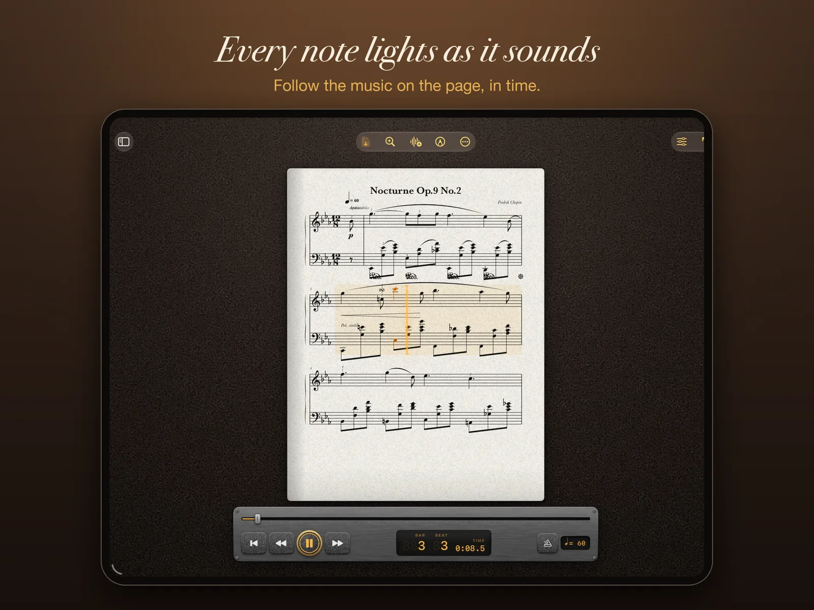
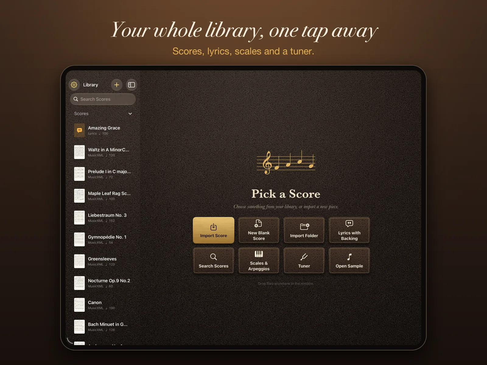
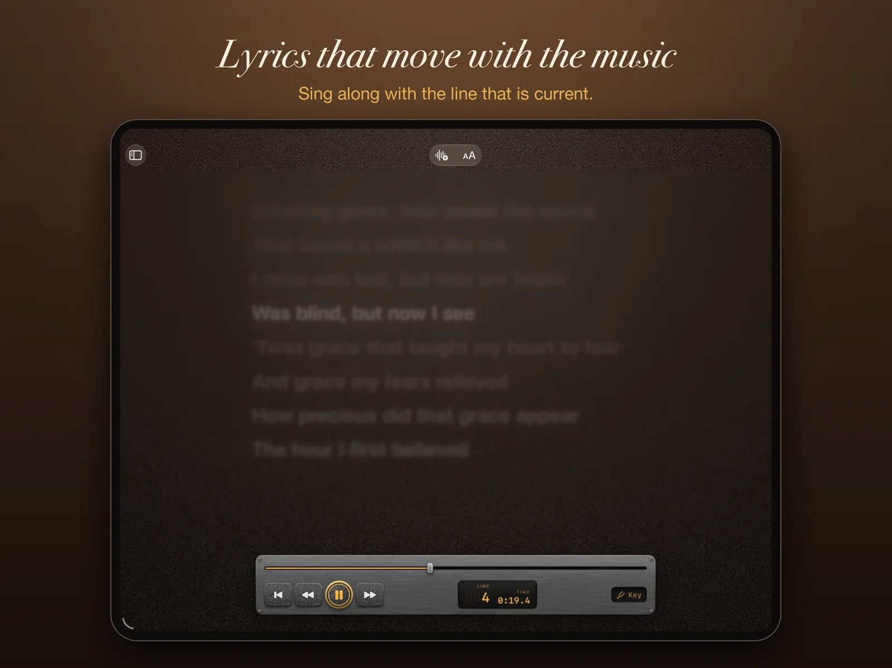
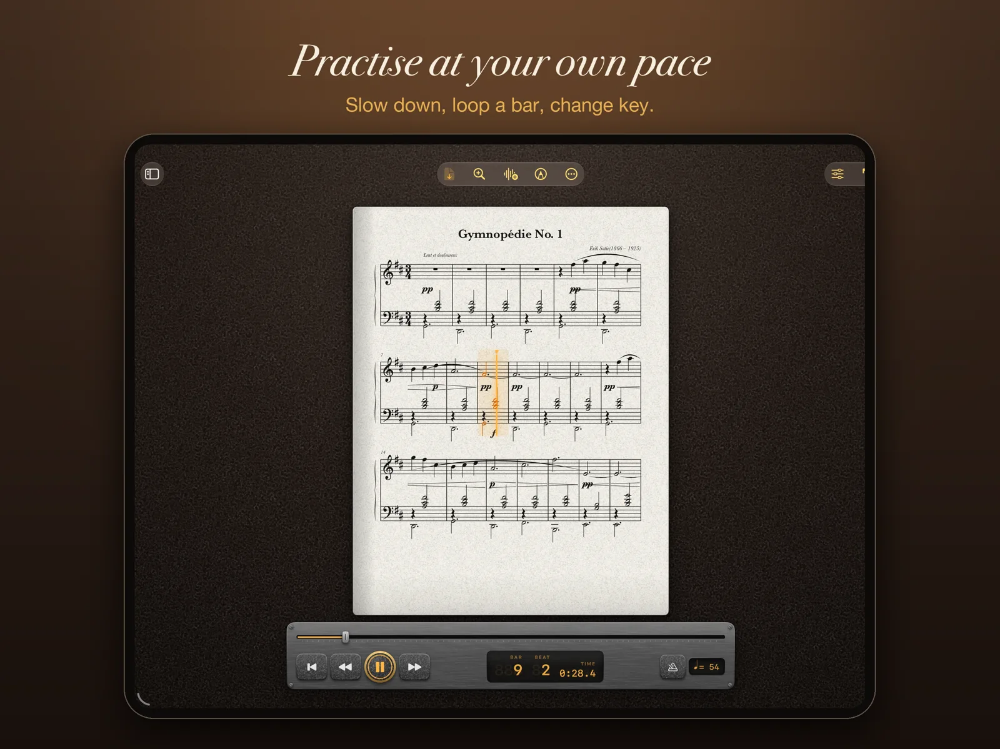
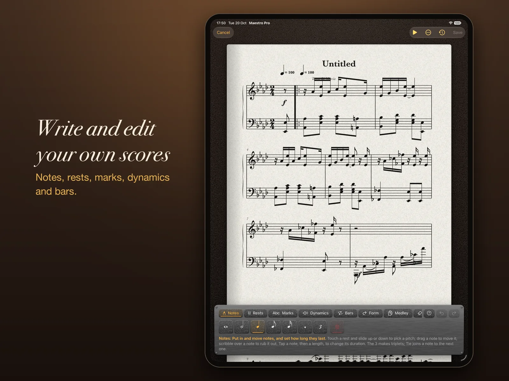
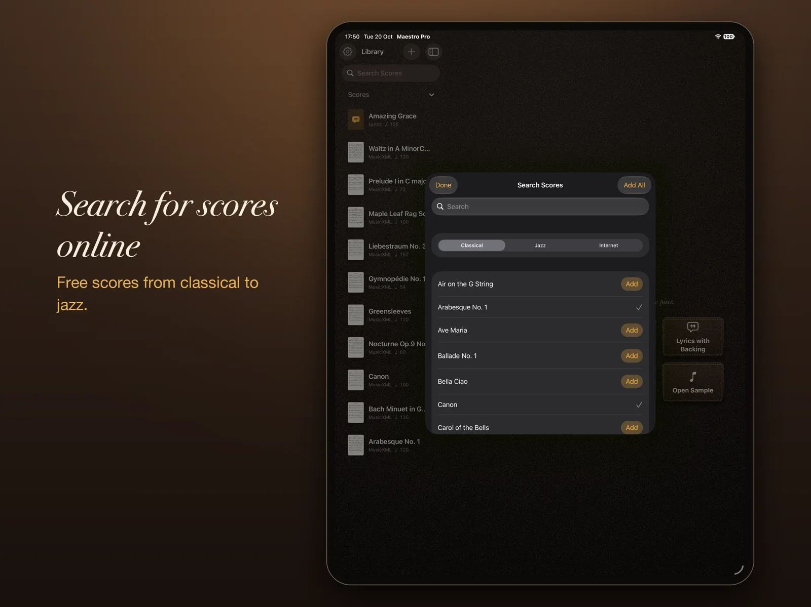
On Mac
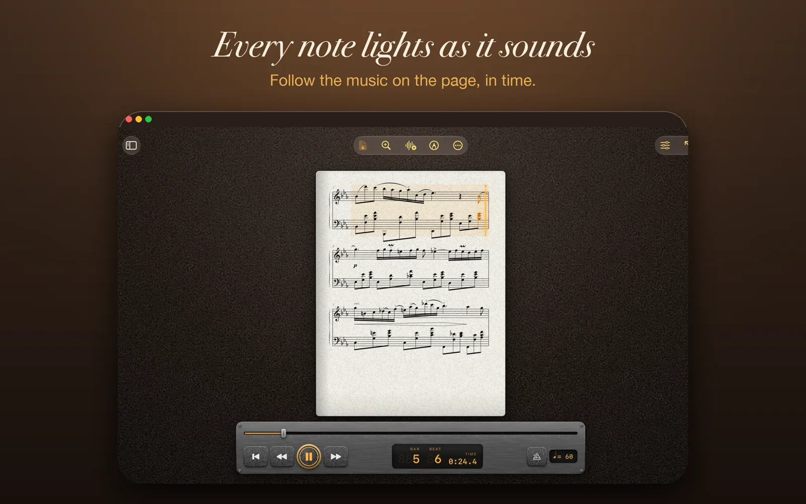
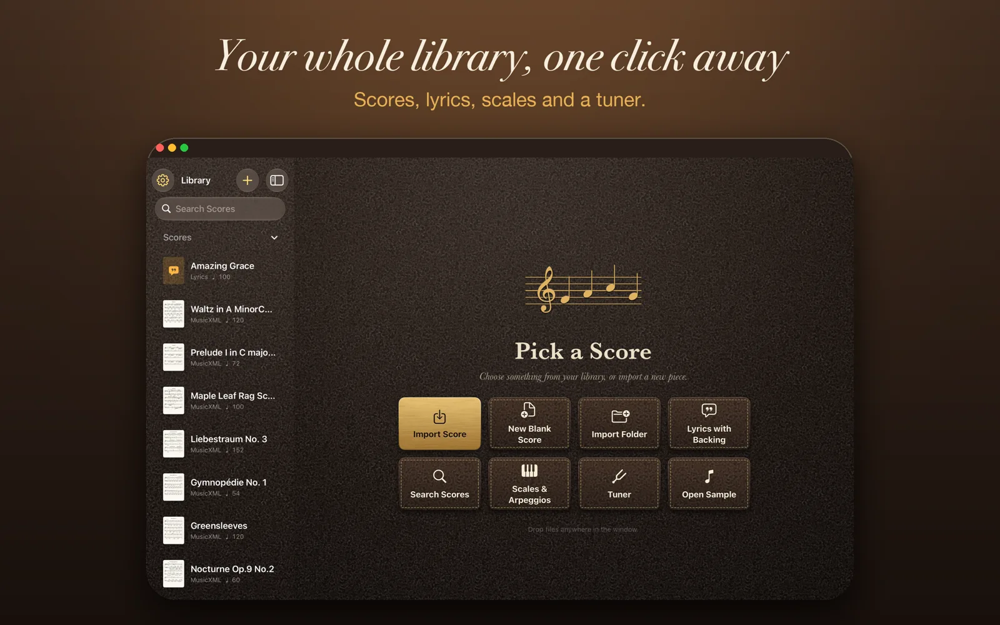
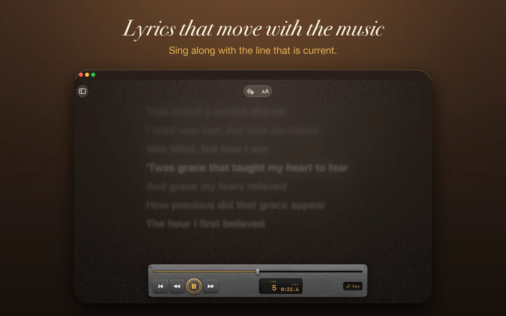
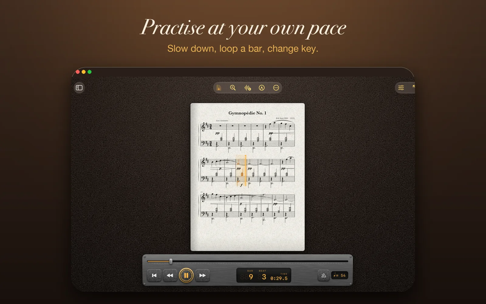
Write it. Change it. Put it right.
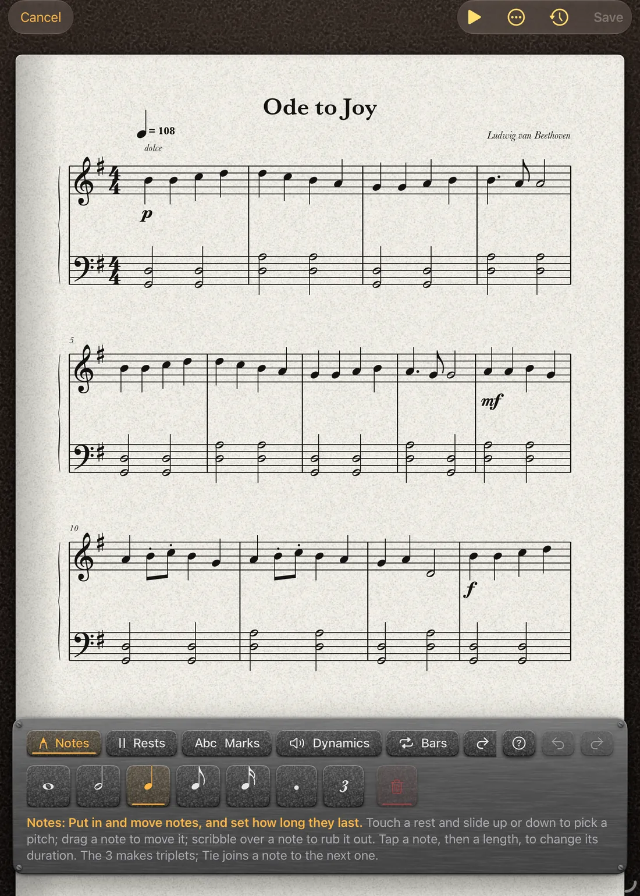
Fix a wrong note, add a harmony, or write something new. Touch a note and slide it up or down, scribble over it to rub it out, tap a length to change it. The editor works out beams, ties and bar lengths for you.
Every save is a version you can come back to. Try an idea on a branch, merge it back bar by bar, spin a version off as a new score, and push the whole history to your own GitHub repository.
Teaching music?
Maestro Pro gives students a patient practice partner and tutors a quicker way to prepare parts and run an ensemble. The free version can be rolled out to a whole school through Apple's volume purchasing.
Start free. Pay when you need more.
- Free£0
- Open and read sheet music and lyrics files, and play along with your own audio files. You can also connect your own GitHub repositories and add tracks from them, make scales and arpeggios in any key, and set your own tempo.
- The built-in synth instruments are included. They play the score, but nothing follows along on the page: no note highlighting, bar highlighting or moving line until Performer.
- Nothing that needs the internet: no searching for scores, no finding lyrics or singers.
- No equaliser or other tools. It opens your music and plays it at the tempo you choose, and that is all.
- Performer£10 a month
- Everything except the score editor. Notes, bars and a moving line that follow the music, Search Scores and lyrics online, key changes and the equaliser, backing tracks and Apple Music, Play Together, the tuner, Wait for Me, recording and review, annotation, export and print.
- Professional£15 a month
- Everything, including the score editor. Write and change music, build medleys, and keep version history with branches, merges and GitHub sync.
- Yearly
- Pay for a year and get two months free: £100 a year for Performer, £150 a year for Professional.
- Free week
- Both paid plans start with a one-week free trial.
Prices are UK prices. Prices in other countries are set by the App Store. Subscriptions renew until you cancel in your Apple Account settings.
What you need.
- Devices
- iPad or Mac. There is no iPhone version.
- iPad
- iPadOS 17 or later. That covers these iPads:
- iPad Pro: 12.9-inch (2nd generation) and later, 11-inch (all), 10.5-inch
- iPad Air: 3rd generation and later
- iPad: 6th generation and later
- iPad mini: 5th generation and later
- Mac
- macOS 14 Sonoma or later. You get the keyboard shortcuts, multiple windows and trackpad or mouse drawing.
- Apple Pencil
- Optional. You do not need a Pencil to read, play, transpose or edit.
- Annotating on iPad uses Apple Pencil, so your finger still scrolls and taps. On a Mac you draw with the trackpad or mouse.
- Editing works with a finger or a Pencil. A setting, Edit with Apple Pencil Only, stops a resting hand changing notes.
- Any Apple Pencil that works with your iPad will do: Apple Pencil (1st generation), (2nd generation), (USB-C) or Pro. Which one your iPad takes is listed on Apple’s Pencil compatibility page.
- Optional extras
-
- Microphone for the tuner, Wait for Me and recording.
- Camera for scanning printed music, which is coming in a future update.
- Apple Music subscription to play along with a song and see its lyrics.
- iCloud Drive to keep your library on all your devices.
- Local network permission for Play Together. Devices find each other over Wi-Fi and Bluetooth, with no account.
- Internet to search for scores, lyrics and singers, and for GitHub.
- Files it opens
- PDF, MusicXML (.musicxml, .xml, .mxl), MIDI and karaoke (.mid, .kar), lyrics (.lrc, .txt), CD+Graphics (.cdg) and Maestro Pro scores (.maestropro).
Device lists follow Apple’s own for iPadOS 17 and macOS 14. Maestro Pro has not been released yet, so details may change before it is.
Coming to TestFlight.
Maestro Pro will be available to test on TestFlight soon. It is not on the App Store yet.
Created by Toby Jones in England, UK